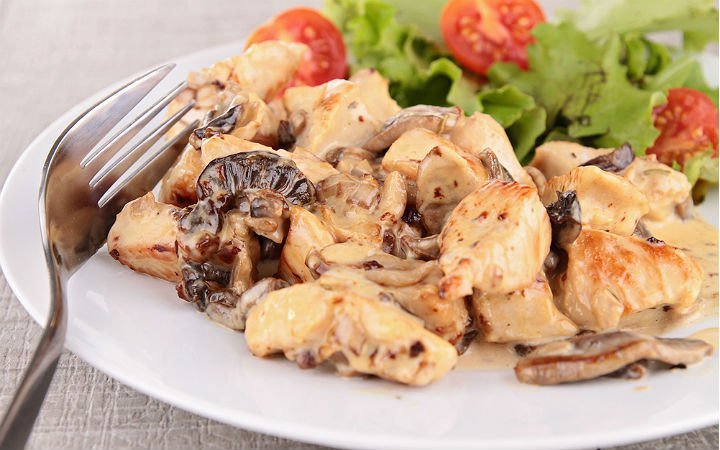

Kremalı Mantarlı Tavuk Tarifi

Kısa Bilgi
Kremalı mantarlı tavuğunuzun yanına bulgur pilavı yapabileceğiniz gibi pirinç pilavını da tercih edebilirsiniz.
Soslu makarna ya da fırında makarna da kremalı mantarlı tavuğunuz için oldukça uygun olacaktır.
Patates püresi yaparak hem daha hafif hem de daha lezzetli bir menü oluşturabilirsiniz.
Yemeğinizin yanına fırında patates de yapabilirsiniz.
Gereken Malzemeler
- 1 kilo kemiksiz tavuk but ya da tavuk göğsü
- 800 gr kültür mantarı
- 1 adet orta boy soğan
- 2 diş sarımsak
- 1 adet kırmızı kapya biber
- 4 yemek kaşığı zeytinyağı
- 1 paket sıvı krema
- Kekik
- Karabiber
- Kırmızı toz biber
- Tuz
Nasıl Yapılır
- Öncelikle 600 gr kemiksiz tavuk but ya da tavuk göğsünü jülyen şeklinde doğrayın. 400 gr kültür mantarını temizleyip, orta büyüklükte ince ince doğrayın.
- Ardından 1 adet orta boy soğanı ve 2 diş sarımsağı ince ince doğrayı. 1 adet kırmızı kapya biberi de jülyen şeklinde doğrayın.
- Orta büyüklükte geniş bir tencere içine 4 yemek kaşığı zeytinyağı döküp, iyice ısıtın. Isınan yağın üzerine jülyen şeklinde doğradığınız tavuk etlerini koyun.
- Tavuk etleri suyunu çekip, hafifçe kızarana kadar pişirin. Ardından pişen tavuk etlerinin üzerine doğranmış soğan ve sarımsağı ekleyin. Soğanlar güzelce yumuşayana kadar ara ara karıştırarak, pişirmeye devam edin.
- Daha sonra tencereye doğranmış mantarları koyup, 1-2 dakika kavurun. Ardından doğranmış kırmızı kapya biberi, damak tadınıza göre tuz, karabiber, kırmızı toz biber ve kekik ekleyin.
- Mantarlar suyunu çekip, biberler ile birlikte yumuşayana kadar ara ara karıştırarak, pişirin.
- Son olarak pişen mantarlı tavuk karışımının üzerine 1 paket sıvı krema dökün. Tüm malzemelerin güzelce karışmasını sağlayın. Krema hafifçe koyulaşana kadar orta kısık ateş üzerinde pişirin.
- Hazırladığınız mantarlı kremalı tavuk soteyi sıcak olarak servis edebilirsiniz. Afiyet olsun!